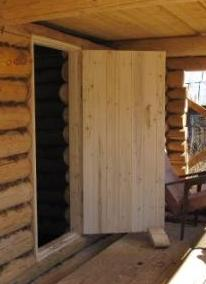
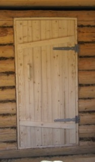
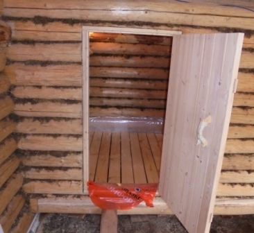

- Главная
- Cруб
- Выпиливание входной двери
- Двери
- Монтаж слива парной
- Основание первого уровня пола
- Обрешётка первого уровня пола
- Тепло и гидроизоляция в парной
- Основной пол в парной
- Окно в предбаннике
 Монтаж входной двери.
Монтаж входной двери.
Монтаж входной двери.
Монтаж входной двери.

Установленная входная дверь.
Её покупали готовую, только петли навесили сами. Видно по периметру дверного косяка уплотнение из ждута. Именно для этого мы делали пропил на 1,5см больше двери.
Ручку поставили деревянную. Что бы она не загрязнилась при строительстве, временно обклеили малярным скотчем.
Аналогично установили дверь в парную. Она меньших размеров. Верхнее бревно осталось нетронутым. Важно сразу учитывать уровень будущего пола. Для предотвращения ситуации, когда уровень двери окажеться ниже уровня поля.
Фотография сделана позже, когда уже был настелен пол в парной. Пол - отдельня история, про это ниже.